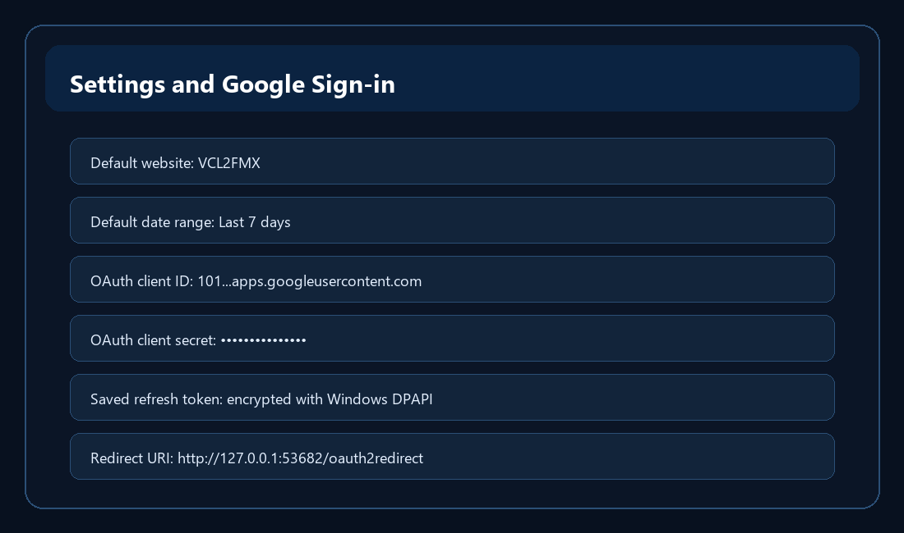

Settings and Google Sign-in

Dashboard defaults
- Settings stores default website selection, default date range, startup refresh preference, OAuth client ID, OAuth client secret, and loopback port.
- Save and Close writes these choices to the portable SQLite settings database.
Google OAuth setup
- The OAuth desktop client ID and client secret come from your Google Cloud OAuth desktop client. They are not your Gmail address.
- The client secret is masked by default. Use Show only when you need to reveal or edit it.
- Connect Google opens your browser for the first authorization. Google redirects back to the local loopback listener and the app receives an access token plus a refresh token.
Silent reconnect
- The refresh token is encrypted with Windows DPAPI and saved in SQLite.
- On later launches, the app tries to decrypt that value and refresh the access token silently before opening Google.
- Disconnect clears the current access token and the saved encrypted refresh token.
Credential caution
- Do not publish your local SQLite database, OAuth client secret, encrypted refresh token, credential JSON files, token files, or .env files.
- For open-source use, each user should bring their own Google Cloud desktop OAuth client.